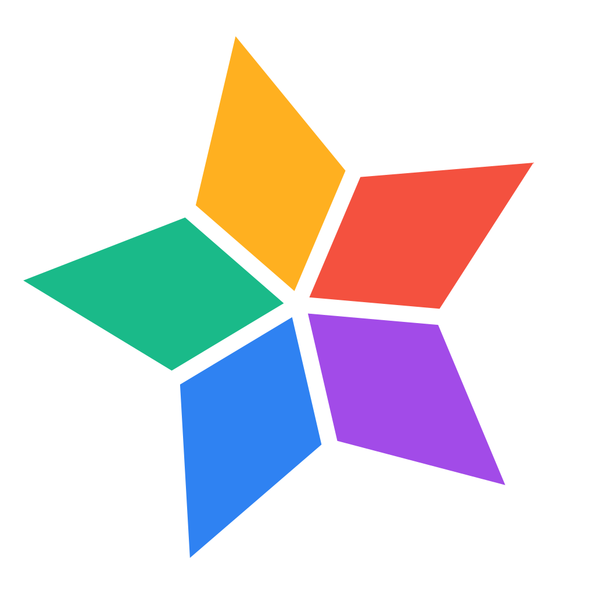
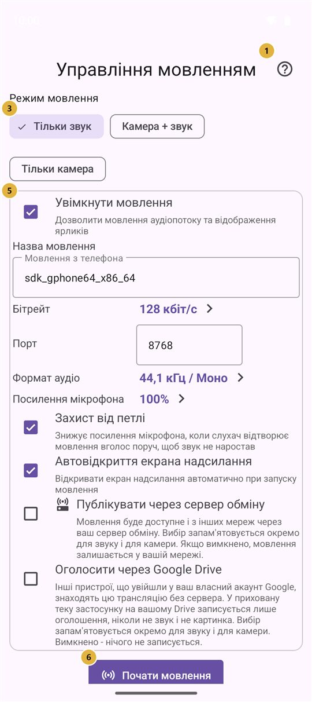
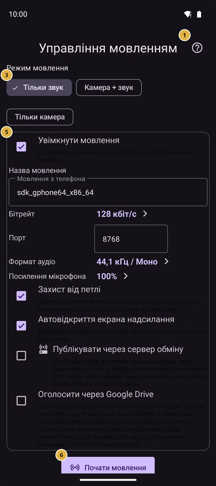

Управління мовленням
Для чого цей екран
Перетворіть телефон на живу станцію: він передає звук або звук і картинку з камери на інші пристрої. Ви вибираєте, що передавати, запускаєте й роздаєте посилання чи QR-код.


Порядок дій
- Виберіть, що передавати, у розділі «Режим мовлення» 3, і камеру 4, якщо в передачі є картинка.
- Один раз перевірте налаштування 5: назву, якість звуку і те, чи піде мовлення ще й через ваш сервер обміну.
- Натисніть «Почати мовлення» 6. Уперше Android запитає про мікрофон, камеру й сповіщення.
- Дайте слухачам QR-код або посилання 14: «Копіювати посилання» 15, «Експорт у файл» 16 або «Надіслати» 17.
- Стежте за кількістю слухачів 2. «Зупинити мовлення» 12 завершує його для всіх.
Елементи
Верх екрана
1ДовідкаВідкриває цю сторінку.
Поки ви в ефірі, мовлення триває й за відкритої сторінки.
- Сполучення клавіш
- F1
2Кількість слухачівСкільки пристроїв слухає.
Рахує пристрої, підключені до цього мовлення зараз. Показується, поки ви в ефірі.
- Скасування
- Скасовувати нічого: число йде за слухачами.
Перед запуском
3Режим мовленняТільки звук, Камера + звук або Тільки камера.
«Тільки звук» передає звук. «Камера + звук» передає звук і картинку. «Тільки камера» передає картинку без звуку. Режим можна змінювати й в ефірі; слухачі тоді відкривають потік знову за оновленим посиланням чи QR-кодом.
- Скасування
- Виберіть попередній режим.
4КамераЯку камеру використовувати.
Основна, фронтальна чи зовнішня, залежно від того, що є в телефоні. Показується, коли в передачі є картинка. Якщо камери немає, екран повідомляє про це.
- Скасування
- Виберіть іншу камеру; перемикати можна й в ефірі.
5Налаштування мовленняВідкриває налаштування мовлення.
Відкриває сторінку «Трансляція» в налаштуваннях: назву, якість звуку, порт, посилення мікрофона та варіанти публікації в інших місцях. «Назад» повертає сюди.
- Скасування
- Будь-яке налаштування можна повернути як було.
6Почати мовленняПочинає мовлення.
Запитує в Android потрібний доступ і запускає мовлення. Поки воно триває, показується сповіщення, тому мовлення продовжується, коли ви йдете з екрана. Якщо недоступні мікрофон, камера, сповіщення чи мережа, екран повідомляє, що завадило.
- Скасування
- «Зупинити мовлення» завершує його.
Поки ви в ефірі
7Камера УВІМК / ВИМККамера ввімкнена або вимкнена.
Ховає або показує картинку, не припиняючи мовлення.
8Мікрофон УВІМК / ВИМКМікрофон ввімкнений або вимкнений.
Показується, коли звук і картинка йдуть разом. Вимикає звук, не припиняючи мовлення.
9Змінити камеруОсновна чи фронтальна камера.
Змінює камеру просто в ефірі.
10Погасити екранДозволяє екрану згаснути.
У мовленні лише зі звуком екран може згаснути, а мовлення триває. Якщо в передачі є камера і телефон не може тримати її ввімкненою за вимкненого екрана, кнопка називається «Затемнити екран» і закриває застосунок чорною шторкою.
- Скасування
- Розбудіть телефон кнопкою живлення або натисніть «Назад», щоб прибрати чорну шторку.
11Надіслати на годинникПередає мовлення на годинник.
Показується, поки ви в ефірі й парний годинник доступний. Застосунок повідомляє, чи годинник відтворює мовлення одразу, чи зберіг його, щоб ви відкрили.
12Зупинити мовленняЗавершує мовлення.
Слухачі одразу втрачають потік. Сповіщення зникає.
- Скасування
- «Почати мовлення» запускає нове.
13Стан на сервері обмінуНа якому сервері обміну мовлення і як у нього там справи.
Коли сервер обміну додано, кожне мовлення оголошується на ньому від самого початку. Цей рядок називає сервер і повідомляє, чи мовлення оголошується, чи воно на сервері, чи триває роздача потоку через сервер, чи мовлення лишається у вашій мережі, бо сервер не зміг його прийняти; тоді кнопка «Чому не підключається?» підказує, що перевірити. Без сервера рядок каже, що мовлення доступне лише в цій мережі, а дотик відкриває екран «Сервер обміну», щоб додати сервер.
Як роздати мовлення
14QR-код і посиланняQR-код і посилання цього мовлення.
Інший пристрій зчитує QR-код або відкриває посилання, щоб слухати. Торкніться коду, щоб побачити його на весь екран. Посилання працює, поки ви в ефірі.
15Копіювати посиланняКопіює посилання.
Кладе посилання в буфер обміну, щоб вставити його в повідомлення.
16Експорт у файлЗберігає мовлення у файл.
Записує невеликий файл, який інший пристрій відкриває, щоб слухати. Ви вибираєте, куди зберегти.
- Скасування
- Видаліть файл.
17НадіслатиНадсилає посилання через інший застосунок.
Відкриває системне вікно «Поділитися»: ви вибираєте чат, пошту чи застосунок, куди піде посилання.
18Як це дивитисяПосібник для слухачів.
Відкриває в браузері вебсторінку про те, як дивитися мовлення; її можна переслати запрошеним. Потрібна мережа.